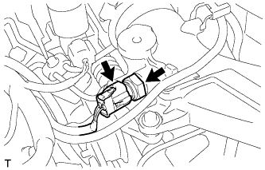

ДАТЧИК ТЕМПЕРАТУРЫ ВОЗДУХА НА ВПУСКЕ (для моделей с DPF) > СНЯТИЕ |
| 1. СНИМИТЕ КРЫШКУ ДВИГАТЕЛЯ № 1 В СБОРЕ |
 |
Отверните 2 гайки.
| *1 | Крепление крышки двигателя № 1 |
| *2 | Кронштейн крышки двигателя № 3 |
Отсоедините 2 крепления крышки двигателя № 1 от кронштейна крышки двигателя № 3 и снимите крышку двигателя № 1.
| 2. СНИМИТЕ ДАТЧИК ТЕМПЕРАТУРЫ ВОЗДУХА НА ВПУСКЕ |
|  |
Отсоедините разъем датчика температуры воздуха на впуске.
Снимите датчик температуры воздуха на впуске и прокладку с помощью ключа для контргайки шарового шарнира на 22 мм.